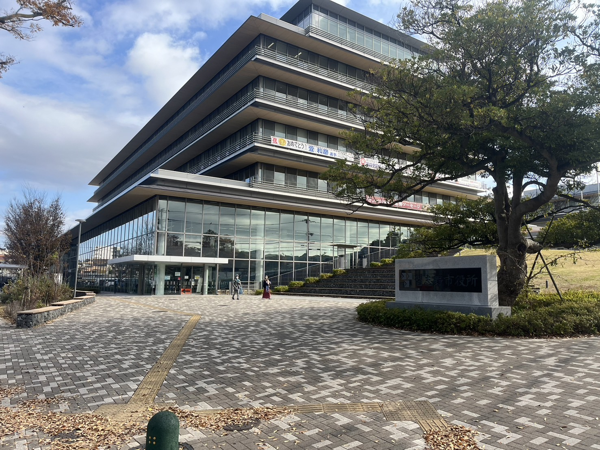
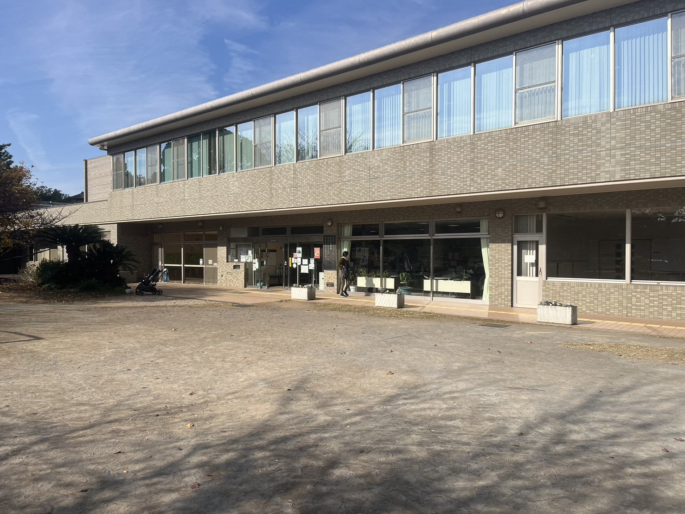
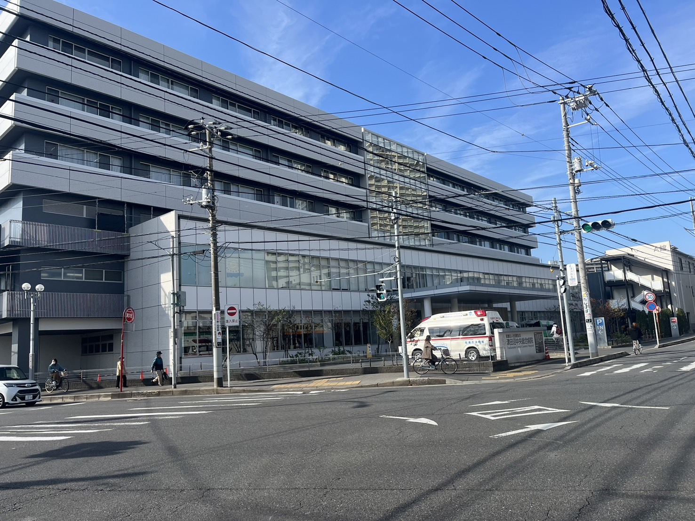

行政施設: 習志野市役所
| 住所 | 千葉県習志野市鷺沼1丁目1-1 |
|---|---|
| アクセス | 京成線「京成津田沼駅」から徒歩10分 |
| 営業時間 | 平日: 8:30〜17:15 |
| 定休日 | 土日・祝日 |
| サービス内容 | 住民票発行、戸籍手続き、税金相談、福祉相談窓口 |

行政施設: 谷津図書館
| 住所 | 千葉県習志野市谷津5丁目2-10 |
|---|---|
| アクセス | 京成線「谷津駅」から徒歩5分 |
| 営業時間 | 平日: 9:00〜19:00 / 土日: 9:00〜17:00 |
| 定休日 | 月曜日、年末年始 |
| サービス内容 | 図書の貸出・返却、読書スペース、イベント開催、地域資料の保存 |

医療施設: 津田沼中央総合病院
| 住所 | 千葉県習志野市谷津1丁目16-10 |
|---|---|
| アクセス | JR津田沼駅から徒歩7分 |
| 診療時間 | 平日: 9:00〜17:00 / 土曜: 9:00〜12:30 |
| 定休日 | 日曜・祝日 |
| 診療科目 | 内科、外科、小児科、整形外科、眼科 |